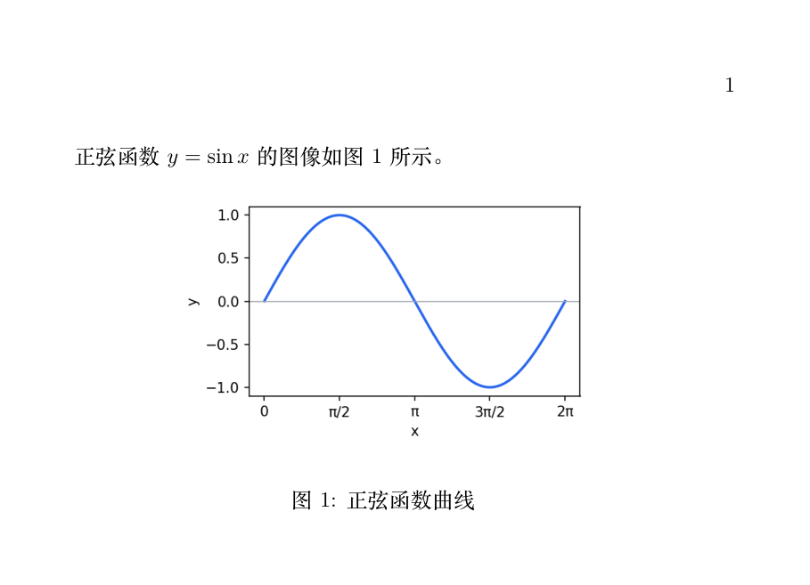
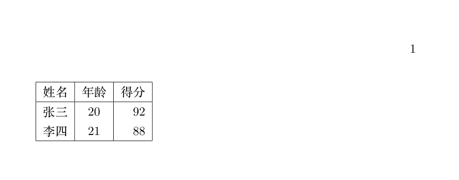
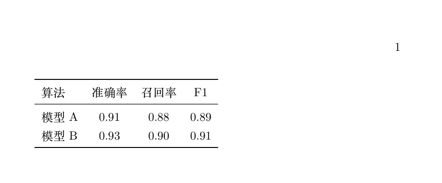
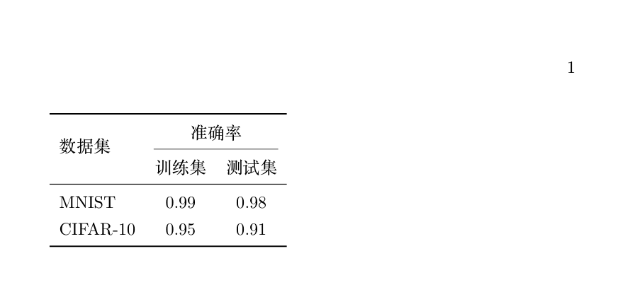

LaTeX 図と表
図表は論文の骨組みです。この記事では4つの内容を紹介します：図の挿入コマンドとフロート、基本テーブル、学術標準の三線表、セルの結合。
LaTeX の図表管理の考え方は番号付けと同じです：内容とタイトルを入れるだけで、位置・番号・参照はすべて自動です。
図の挿入：graphicx パッケージ
図の挿入にはコマンドが2つだけ必要です：プリアンブルで graphicx を読み込み、本文で \includegraphics を使って画像ファイルを配置します。
| よく使うオプション | 意味 | 例 |
|---|---|---|
| width | 幅。相対値も使えます | width=0.8\textwidth（本文幅の80%） |
| height | 高さ | height=5cm |
| scale | 拡大率 | scale=0.5 |
| angle | 回転角度 | angle=90 |
ファイル名の推奨拡張子なし：sin.png ではなく sin と書きます。LaTeX は現在のコンパイラが対応している形式を自動で探します（XeLaTeX は PDF、PNG、JPG などに対応）。形式を変えてもソースを変更する必要はありません。
画像サイズを制御するときは、scale ではなく width=\textwidth のような比率値を使いましょう。前者は画像が本文幅を超えないことを保証しますが、後者は異なるフォントサイズ設定で予期せずはみ出すことがあります。
フロート：figure 環境
画像は本文の流れに直接置くべきではありません。標準的な方法は figure フロート環境に入れることです。
例：標準的な図の挿入
\usepackage{graphicx} % 図の挿入に必要なパッケージ
\begin{document}
正弦関数$y = \sin x$のグラフを図~\ref{fig:sin}に示す。
\begin{figure}[htbp] % フロート環境。位置パラメータは下表参照
\centering % フロート内で画像を中央揃え
\includegraphics[width=0.6\textwidth]{sin}
\caption{正弦関数の曲線} % 図キャプション。番号自動生成
\label{fig:sin} % ラベル。\ref で参照する
\end{figure}
\end{document}

環境名の後の角括弧は「位置の提案」で、LaTeX にどのような位置に表示したいかを伝えます。
| パラメータ | 意味 | 優先度の説明 |
|---|---|---|
| h | here：ソースコードの位置 | あくまで提案で、レイアウトに収まらない場合 LaTeX が自動調整します |
| t | top：ページ上部 | 学術論文で最も一般的な選択 |
| b | bottom：ページ下部 | よく t と組み合わせる |
| p | p（float page）：独立フロートページ | 図表が多い場合は自動的に独立したフロートページにまとめられる |
| !（例： [!h]） | レイアウトの制約を緩める | 強く要求するときに重ねて使う |
「私の画像はどうして他所へ行ってしまったの？」——これはバグではなく、フロート機構が働いているのです：LaTeX は大きな隙間を生まない位置を各図に選びます。本当に位置を固定したい場合は、float パッケージの [H] パラメータ（大文字で here の意味、移動禁止）を使います。
基本の表：tabular 環境
テーブルの構文の骨格は行列環境と同じです：& で列を区切り、\\ で改行、列形式は環境パラメータで宣言します。
例：全枠線付きの表
\begin{document}
\begin{tabular}{|l|c|r|} % 列形式：左揃え、中央揃え、右揃え、縦線で区切る
\hline % 上部の横線
名前&年齢&得点\\ % & は列区切り、\\ は改行
\hline
山田太郎& 20 & 92 \\
鈴木次郎& 21 & 88 \\
\hline % 下部の横線
\end{tabular}
\end{document}

| 列形式の記号 | 意味 |
|---|---|
| l / c / r | その列を左揃え / 中央揃え / 右揃えにする |
| | | その位置に縦線を引く |
| p{2cm} | 列幅を固定し、セル内で自動改行する |
学術標準：booktabs三線表
正式な出版物を開くと、表は「横線3本、縦線ゼロ」です——これが有名な三線表で、booktabs マクロパッケージによって提供されます。
例：三線表
\usepackage{booktabs} % 三線表専用パッケージ
\begin{document}
\begin{tabular}{lccc} % 三線表は縦線を一切使わない
\toprule % 頂線、最も太い
アルゴリズム&精度&再現率& F1 \\
\midrule % 中線、やや細い
モデル A& 0.91 & 0.88 & 0.89 \\
モデル B& 0.93 & 0.90 & 0.91 \\
\bottomrule % 底線、最も太い
\end{tabular}
\end{document}

ジャーナルや卒業論文の書式規定は、ほぼすべて三線表を要求します。日常の課題で | と \hline を使って全枠線の表を作るのは構いませんが、投稿前には必ず booktabs に変更してください——縦線はプロの組版では「素人」の印と見なされます。
セルの結合：multirow と multicolumn
複雑なヘッダーでは結合が必要です：横方向の結合は \multicolumn（LaTeX 組み込み）、縦方向の結合は \multirow（multirow パッケージの読み込みが必要）を使います。
例：二段ヘッダー
\usepackage{booktabs}
\usepackage{multirow} % セルを縦方向に結合
\begin{document}
\begin{tabular}{lcc}
\toprule
\multirow{2}{*}{データセット} & \multicolumn{2}{c}{精度} \\
\cmidrule(lr){2-3} % 2〜3列目にだけ部分的な横線を引く
&トレーニングセット&テストセット\\
\midrule
MNIST & 0.99 & 0.98 \\
CIFAR-10 & 0.95 & 0.91 \\
\bottomrule
\end{tabular}
\end{document}

| コマンド | 構文 | 説明 |
|---|---|---|
| \multirow | \multirow{行数}{*}{内容} | 縦方向に行をまたぐ。またがる行の対応位置は空ける |
| \multicolumn | \multicolumn{列数}{列形式}{内容} | 横方向に列をまたぐ。そのセルの列形式を書き直す必要がある |
| \cmidrule | \cmidrule(lr){2-3} | 部分横線。(lr) は両端に少し隙間を残し、より精緻になる |
表のキャプションと全体フロート
テーブルも同様にフロートの中に入れます。環境は table で、その他の流れは figure と完全に同じです。
例：番号付きの表
\centering % テーブル全体を中央揃え
\caption{実験結果の比較} % 表キャプション（慣例ではテーブルの上）
\label{tab:result}
\begin{tabular}{lcc}
\toprule
データセット&トレーニングセット&テストセット\\
\midrule
MNIST & 0.99 & 0.98 \\
\bottomrule
\end{tabular}
\end{table}
2つの不文律：表キャプションはテーブルの上、図キャプションは画像の下；図表ラベルの接頭辞はそれぞれ tab: と fig: を使い、参照時に一目で種類が分かるようにします。
テーブルが本文幅より広い場合の応急処置は2つあります：tabular 全体を \resizebox{\textwidth}{!}{...} で包んで等比拡大縮小するか、tabularx パッケージを使って列幅を自動配分するかです。前者は手軽で、後者はより規範的です。
まとめ
| 目的 | コマンド / 環境 |
|---|---|
| 図の挿入 | \includegraphics[width=0.8\textwidth]{ファイル名} |
| 図/表フロート | figure / table + [htbp] + \centering + \caption + \label |
| 表の骨格 | tabular、& は列区切り、\\ は改行 |
| 三線表 | booktabs：\toprule \midrule \bottomrule |
| セルの結合 | \multirow、\multicolumn |
| 部分横線 | \cmidrule(lr){2-3} |